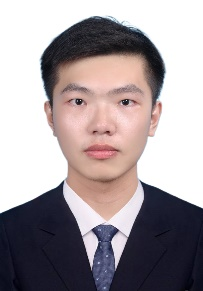

College of Automation, Wuhan University of Technology
No. 122, Luoshi Road, Hongshan District, Wuhan City, Hubei Province，postal code：430070
I am now seeking graduate students with a keen interest in machine learning and computer vision.
If you demonstrate good personality & possess a solid background in mathematics & English and happen to be interested in my research,
please don't hesitate to contact me!
I am Quan Zhou, a native of Xiantao, Hubei Province. Currently, I serve as a Specially-appointed Associate Professor at the School of Automation, Wuhan University of Technology. I obtained my PhD degree in Biomedical Engineering (supervised by Mingyue Ding, Ming Yuchi and Xuming Zhang) from Huazhong University of Science and Technology in 2021, and conducted post-doctoral research in Mechanical Engineering (supervised by Bo Tao) at HUST from 2021 to 2023.My main research interests lie in the areas of computer vision, medical image analysis, intelligent medical diagnosis, intelligent navigation and the development of surgical robotic systems.
email：zhouquan910@whut.edu.cn
address：No. 122, Luoshi Road, Hongshan District, Wuhan City, Hubei Province，postal code：430070
office：Room 301, Comprehensive Experimental Building, Mafangshan East Campus, Wuhan University of Technology